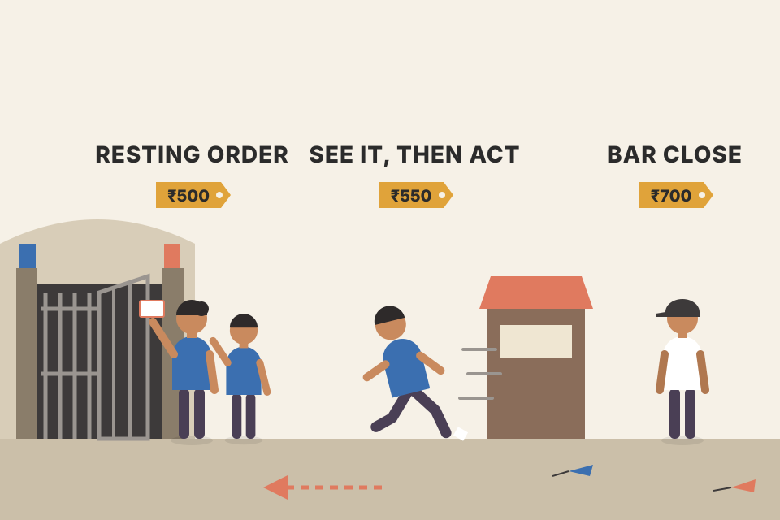
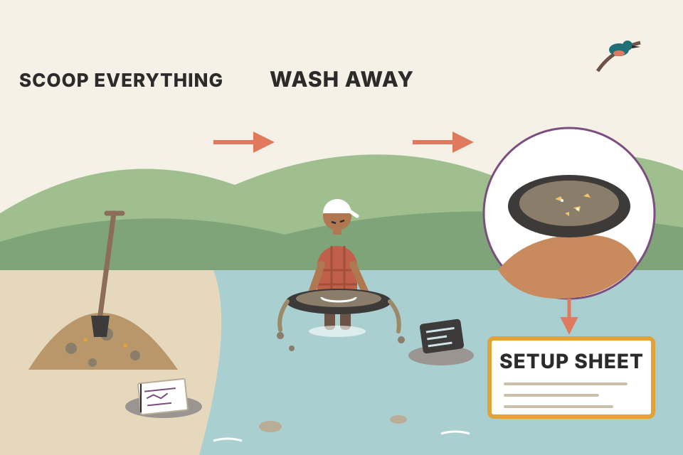
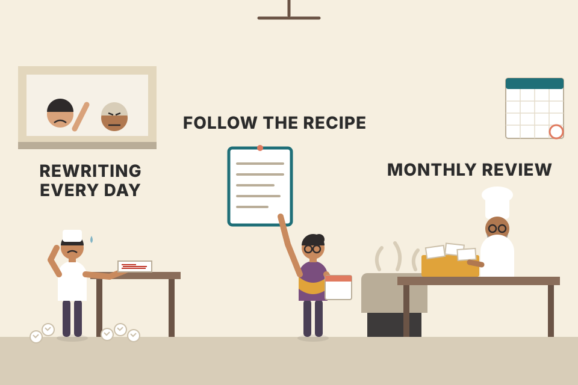
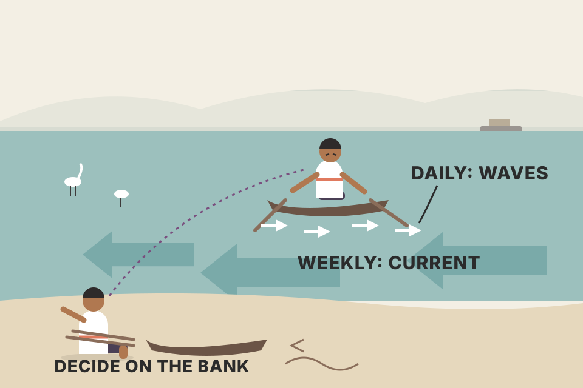

Module 7 adds the last pattern, the breakout, and then spends most of its pages on what makes any pattern tradable: a written plan, a research journal, a disciplined process, multiple-timeframe rules, stops and exits, risk management, and where trading ideas come from. Everything is here in the module's order, in plain words, with a live tool for every idea that has a mechanism. Every price on this page is simulated: it is built to show one idea, and it is not market evidence.
The module has two halves. First come five short exercises (Sections 1–5). Then come thirteen of Grimes' blog essays, grouped under four headings, that explain the thinking behind those exercises. The chain below is the logic that ties them together.
Grimes says this module finishes the set of specific chart patterns. By now you can trade a trend while it is moving, trade when a trend may be ending, and trade inside a range. Breakouts add the last case: a market leaving a range and starting a new trend leg. With that, he calls the tool set complete: it is the base for any directional technical trade.
The module has four jobs:
Which module covers which part of the path is my own summary of the module intros (M4 pdf p156, M5 p182, M6 p209); Grimes lists only the four market situations.
A toolbox with four drawers: one for trends in motion, one for trends getting tired, one for sideways markets, and now one for the moment a sideways market wakes up. The rest of the module is about the workshop rules: when you may open which drawer, how much wood you may cut, and how you write all of that down.
The task: use the same techniques as before to backtest a variation of the breakout. Write a rule set for the exact type of breakout you will trade, then do a careful manual backtest, bar by bar, and track the P&L carefully and consistently to see what edge the pattern may have.
Grimes names three things that make this pattern harder to test than the earlier ones:
And at least three questions you must answer before starting the test:

A crowd pressing on a gate. The level is the gate. The question "how will I execute?" is where you stand: already waiting at the gate with a ticket (resting order), running over when you hear it open (see it, then act), or arriving after the crowd has settled (close of the bar). Each spot gives a different price and catches a different set of gate openings.
The three execution choices don't just give different prices; they select different trades. The resting order catches every poke above the level, including ones that reverse in the same bar. Waiting for the close skips those intrabar fakes, but pays a worse price on the real ones. The "assume the worst" rule for the entry bar is Grimes' second complication made concrete: a static bar hides whether price hit your stop before or after your entry. Raise the bps slider and watch how much of a small edge the spread eats; at breakout points that cost is at its widest.
Random walk: no rule can have an edge here. Set the cost slider to 0 and the resting order and the close rule land near 0R (within about two ± of it; ± is one standard error, the size of luck). "See it, then act" loses about 0.1R even at zero cost: it pays 0.2 ATR more on a 2-ATR risk, and that is all reaction delay costs. Costs then pull every row down. Ranges then trends: here I built trends that start after ranges, so plain breakouts make money by construction; that is not evidence about real markets. The surprise is the "quiet first" filter: it sounds sensible, yet in my runs it loses, because most quiet bars sit inside ranges, where 20-bar highs keep failing, while the few breaks that start a trend come once per range. A formation rule can pick exactly the wrong trades, and it cuts the sample to about a quarter. Both are Grimes' warnings about formations, measured. (Bars here are built so the high and low are the extremes of a random path between open and close, which makes a resting order at the level a fair fill.)
intraday_swing_playbook.md). Your daily breakout backtest made 13–18%/yr but was no better than just holding the same stocks (backtest_results_summary.md).breakeven_move_fyers.md). That is before the wider spread at the break. Your 15-minute opening-range breakout failed the Nifty 200 re-check; the 5-minute version is only a lead.A good trading plan is an essential tool for a professional trader. Grimes starts with four things it does:
Complete: ideally you could hand your plan to someone else who, with some training, could copy your trading closely. (Discretionary elements make this harder, and they are allowed.) Since your performance will be judged by how well you follow the plan, a vague plan is useless. Usable: if the plan is too detailed you will ignore it; if it is too big you can't revise it, so it stops matching how you really trade. Then you start telling yourself it's fine to ignore a rule you no longer use, and that thought opens the door to serious breaks in discipline.
There is no single answer; know yourself. Most people benefit from more structure, but it has to respect your personality: someone with an accountant's mind won't keep records like a painter does. That is why one-size-fits-all plans tend to fail. Finding the right depth of detail for you is one of the first planning tasks.
Grimes thinks most traders need three plans, and he covers the second and third in depth. The first is a business plan for your trading as it fits into your life. It should cover:
A good Plan 1 often includes family, spirituality, exercise, health and diet: an operating plan for you and your life as a business. It does not include the specifics of your trading method. Typical length: 10–25 pages.
Be as specific as possible. These are rule sheets, not suggestion sheets. Only the goals section is looser, because normal market variation will move your results around.
The CRG sheet points to setup sheets. Err on the side of complete: you may reread a sheet years later. Many traders write them as if teaching a third person to trade the system. The four sections every sheet needs:
Optional deeper sections: the concept behind the setup (and its source, if you didn't develop it); how to calculate any indicators or special measures; trade management (where to add, other exits such as time stops, trades in related markets); size (some setups need different sizes; daytraders may just use a fixed size; most sizing is better handled on the CRG sheet; change the sheet if you change how you trade); discretionary elements, written clearly enough that you can lay each real trade beside the sheet and say plainly whether you followed the rules or broke one; execution notes (leg in and out of spreads or not? market orders or the midpoint?); and notes from backtesting or past experience.
Start over from scratch even if you have some version already: decide what you want, then work bottom up. Expect a good plan to take at least a few weeks: write it, rethink it, go through several versions. Without a written plan, Grimes says, your chances of success are much smaller.
| Example CRG sheet and one setup sheet (my illustration in Grimes' format, not from the book) | |
|---|---|
| Class | Swing breakouts, NSE cash stocks, daily chart |
| Risk | 1% of equity per trade · stop trading for the week after 3 full losses · month: ???? |
| Goals | Activity: 2–6 trades a month. Profit: ???? (unknown until the backtest and paper trades say what the edge is) |
| Setups | Sheet A: 20-day high breakout after a quiet period |
| A · Setup | Nifty above its 200-day average; stock's 5-day ATR below 0.8 × its 40-day ATR; price within 1 ATR of its 20-day high |
| A · Trigger | Daily close above the 20-day high; enter at the close |
| A · Stop | 2 ATR(20) below entry; never moved further away |
| A · Profit taking | Half at 1R; trail the rest under the prior day's low once 1R is hit; time exit after 15 days |
| A · Notes | Skip on results days. Backtest notes: ???? |
A restaurant. The business plan is why the restaurant exists, its hours and its fire-escape plan. The CRG sheet is the kitchen's rule board: which dishes we serve and how much we can spend on each. Each setup sheet is one recipe card, written so a new cook could make the dish exactly the same way.
The CRG sheet sizes risk in money, not shares, so every trade costs the same when it fails. The calculator turns that money into shares: shares = risk ₹ ÷ (entry − stop). A stop twice as far away means half the shares and the same rupee loss. That's why Grimes says most sizing belongs on the CRG sheet, not on each setup sheet. And a written trigger lets you audit yourself: either the trade matched the card, or you broke a rule.
backtest_results_summary.md); using_equations_to_trade.md suggests 0.5–1% risk per trade. That is a CRG risk line you already have evidence for.Start a research journal: a document you'll use, in some form, for the rest of your trading career. Nobody can tell you the right format; it has to fit you and your lifestyle. Grimes' thoughts:
Start now, today: take a piece of paper and write down a few ideas from the course you want to investigate. What matters is that you do it.

A gold panner. The paper notebook is the shovel: scoop everything, don't judge yet. The electronic list is the pan: wash away most of it. What's left in the bottom, after testing, becomes a setup sheet.
Notes/trading folder already works like the electronic end of the funnel: ideas from videos and books (VWAP course, Currency Pros checklist, Stochastic RSI + MACD) went in, were tested, and most were dropped as "not worth trading" (backtest_results_summary.md). What's missing is the dated paper end that records the first observation.Investigate what multiple timeframe analysis might, or might not, add to your trading and to pattern analysis. Grimes' suggested method:
A weekly bar is five daily bars glued together. On Tuesday, the honest weekly bar has only Monday and Tuesday in it. A charting package that shows the finished bar already knows Friday's close. Any rule like "only buy if the week is up" then quietly uses the future. Drag "today" to a Monday or Tuesday and tick the box: the last weekly candle jumps to its final shape.
Rule tested: on each day except Friday, buy at the close if the weekly bar is up, sell at the next day's close. On a random walk the true edge of every rule is zero.
"The finished week is up" partly means "the days after today went up", so the filter picks days that are followed by gains. That's not an edge; it's tomorrow's answer copied into today's question. The honest row uses only the days already printed and sits near zero, like the baseline. Grimes' advice to compare against the baseline and the unfiltered pattern is exactly what exposes this.
backtest_results_summary.md). Both are this project. Worth checking how the higher-timeframe bar was built in that code: completed daily bars only, or the forming one?The readings come from Grimes' book The Art and Science of Technical Analysis: Market Structure, Price Action, and Trading Strategies (Wiley, 2012). The page numbers are printed pages of that book, not pages of this workbook PDF. That book is not in your library.
| Topic | Printed pages (2012 book) | Where this page covers the idea |
|---|---|---|
| Breakouts | 174–188 | 02 (backtest) |
| Breakout examples | 337–345 | 02, 18 |
| Multiple timeframe analysis | 213–230 | 05, 13 |
| Trade management | 231–253 | 14–17 |
Everyone knows the slogans about planning. Grimes asks the harder question: is your plan good enough? Does it have enough detail, and can it do everything you need? If not, fix it today.
He splits planning into two parts. The business plan is the overall control document for you and your trading business: what time of day you work, disaster recovery, how you'll find and develop edges, and every other part of the business. The trading plan covers exactly how and when you get into and out of trades. Traders often write a trading plan; few write the business plan. You need both, or you haven't really planned.
He saw this while coaching traders who had some experience and already knew a lot about what not to do, yet lacked the business side. Without that big-picture plan you lack guidance and vision. It is as much about you (who you are, your purpose, how trading fits your routine and life, how you'll grow) as about trading. A good one is substantial, perhaps ten to twenty typed pages (note: Section 2 gives 10–25 pages for the same Plan #1), and it evolves as the business grows.
It controls your behaviour by stating clearly what you will and won't do.
It describes your business to investors. Even if you never trade anyone else's money, work at that level of professionalism: be as careful with your own money as with a client's. You are your own client, and you owe that client a lot.
Picture the path of development: at one end, someone who just learned to read a bar chart; at the other, someone who has traded for years, may even make some money, but lacks the success or consistency they want. Anywhere on that path, refining the business plan is time well spent, and if you have none, start today.
A shop owner who has perfect recipes but no opening hours, no accounts and no plan for a fire. The recipes are the trading plan; everything else is the business plan. Grimes' coaching clients had good recipes and no shop.
backtest_results_summary.md "Next" list (paper trade, fix survivorship, keep the 200-DMA filter) is the seed of the edge-development part of a business plan."Trader" is a misleading job title. A truck driver drives trucks and a baker bakes, but a trader's job is not simply to trade. Thinking it is leads to overtrading: nothing shows an edge, but you're a trader, so you put on a boredom trade, and it ends badly. Rethink the job as placing the trades your methodology and system call for, and many discipline problems solve themselves.
Your job is not to make money, not to put on trades, and not to catch every move. The market may make a huge move that your system never signalled, and that is fine (depending on your style). Your job is to follow your system and do what it says at the right time: to be a disciplined trader.
Grimes often sees developing traders change the system after each trade or two, so nobody can tell whether the system works because it never stays the same. Trading psychology is like an unruly child: it soon finds the "out" that any action can be justified by saying the rules now include it. His answer to that is one word: no.
A short aside on risk management, which he thinks is one of the main reasons individual traders fail. The best he ever saw was at the Nymex: when a trader started having trouble, he got a little louder, you could almost feel a storm cloud over his desk, and soon the risk manager appeared behind him, tapped his shoulder, and invited him to step away and talk. Sometimes the trader came back a changed man; sometimes he was in a much better frame of mind the next day. At-home traders (and poorly managed prop traders, which Grimes says are basically the same) blow out accounts because they have no boss. Ask yourself: if you had to justify your recent trades to a boss, would you get a bonus or be fired?
| Hat | What it does | What it never does |
|---|---|---|
| Trader | Executes and follows the system: a deliberately "dumb" role. If something seems wrong, writes a note for the developer. | Changes, overrides or ignores the system. |
| System developer | Analytical and unemotional. Monitors performance, tweaks after an appropriate amount of time, always trying to make the edge a bit stronger; hands the new version to the trader. | Hands over a system found on a website or a chat-room tip (Grimes' example: buying at some Fibonacci extension). Reacts to yesterday's emotional results. |
| Boss | Accountability. Tough but nurturing; helps the trader and developer grow. Takes a serious look at what you're doing, and fires you if you can't keep the discipline. | Lets broken discipline slide. |
Wear one hat at a time and switch slowly. Intraday trader: the developer hat goes on at weekends, or maybe once a month, and never in the middle of the trading day; that breach would get you fired. Don't stay until 7 PM rewriting the system every day either; the developer needs more data. Swing trader: maybe once a month or less. Long-term investor: perhaps a few times a year. Whether the system is technical, fundamental or (hopefully not) astrological, be clear on when you trade and when you may tweak.
Each line is the same unchanging system, just a different random order of wins and losses. After 30 trades, a real +0.2R edge still shows as a loss in about one run in six (the readout counts 4,000 runs), and a system with no edge at all still shows a profit about 40% of the time. A developer who changes the rules after every bad week is reacting to this noise. The spread of results grows like √N while the edge grows like N, so only many trades separate them.

A restaurant where the cook rewrites the recipe after every complaint. After a month nobody knows if the dish was ever good. The owner (boss) makes the cook follow the recipe; the head chef (developer) reviews it monthly with all the feedback in hand.
using_equations_to_trade.md sets your pass bar as positive expectancy over at least ~100 trades; the fan chart shows why fewer is not enough.price_physics_basics.md note: drift grows with t, noise with √t. Same maths as this chart, with trades instead of days."Process" is a buzzword but a useful one: it covers everything you do and reminds you to do it consistently. If your patterns, indicators or system work about half the time, it's tempting to doubt the next one and skip it. With a defined process the job is simple: follow the process.
The plan is part of it, but a process goes further and covers everything you do around markets: how you do homework, how you handle conflicts, how the plan evolves, how you evaluate performance, how you look after yourself, how you manage the process itself. Somewhere in it should be the instruction: follow the trading plan.
Trades often set up against conventional wisdom. Grimes' examples of trades that would have looked silly at the time: shorting gold and silver in 2011, buying stocks in October 2014, shorting the EUR in 2014, shorting crude in 2015. Each would have been hard to defend on CNBC, and had they failed, it would have been easy to blame yourself afterwards for missing something obvious.
His approach: treat narrative, news and conventional wisdom as a possible input to the process. Can you measure their influence on your trades, to know whether they're worth attention? If you can't, you're bolting an unmeasured extra influence onto the end of your method. You don't understand it, so how can it help? It's just another degree of freedom. Grimes calls his life's quest simplifying and removing degrees of freedom, and says that's where he found much of his edge. He sees the future only through a cloudy glass of uncertainty; his best guide is a slight statistical tilt. So the answer to conflicts is: work the process.
So he can ignore the narrative and the crowd. That makes him brilliantly contrarian at times (without trying to be) and a brilliant trend follower at other times, getting in early and riding most of a move. He looks equally dumb at other times: shaken out of trades, buying the exact high or selling the exact low, trades that explode against him immediately, or a long hold stopped out just before the move takes off. Unpleasant but unavoidable. Process is the hub that holds the wheel together; in a very real way, it is all there is.
With a small edge, streaks are normal: at a 60% loss rate the longest losing run in 100 trades is typically around 7 (the readout shows this deal's), and winning runs that make you feel like a genius turn up too. Neither streak says anything about the system. If you judge each trade by the story around it (the news, what CNBC thinks), you add a new rule after every streak: one more degree of freedom, never measured. The process ignores the story and keeps dealing.
backtest_results_summary.md).Good trading is largely about asking the right questions; many serious mistakes come from accepting our ideas and perceptions at face value. Grimes' checklist:
The questions won't solve every problem, but they point toward solutions to the most serious ones.
Long DAL alone earns (sector move + DAL's extra). Your idea is only about the extra, but the position also bets on the whole sector. Pairing it (long DAL, short an equal amount of competitors) earns roughly just the extra. If the sector falls 10% and DAL beats it by 3%, you were right and still lose 7% on plain long DAL. That's what "does your position capture the move?" means. (Pairs carry their own costs and risks; your pairs backtest lost even before costs.)
trading_equations.md eq 14 (expected move from implied volatility) is one way to answer question 3 before an event.Anyone can place a winning trade; no skill or edge is needed for one. Making consistent money, month after month and year after year, is hard and needs a process. A process defines what you'll do, how, when, how you'll evaluate it and how you'll modify it. A full trading plan includes all of that, so the plan is a guide to your process, and discipline is "simply" following the plan. Beginners often have no plan and no process, but even experienced traders can smooth rough edges; it's an ongoing journey.
Get to work. Make the plan realistic: an 80-page document full of rules you won't follow is pointless; everything in it should be meaningful and real. But a rough outline isn't enough either, especially for developing traders. Balance detail against ease of use. Then sit down with pen and paper, write freely on these questions, and reread your plan with fresh eyes: what could you do better, what does it say you'll do that you don't, what must change? Process makes us better and leads to consistency.
My model: a system earns +0.2R per trade for 300 trades (40% wins of +2R), then quietly breaks and loses −0.1R per trade (30% wins). You raise the alarm the first time the rolling average of the last W trades drops below zero. Pooled over 400 runs, a short window raises false alarms on the healthy system almost every time (you'd "fix" a working system), while a long window rarely false-alarms but keeps trading the broken system for many more trades. That is Grimes' warning (too short analyses noise, too long corrects too slowly) put into numbers. The right window depends on how many trades you make a month.
using_equations_to_trade.md 5-step workflow ends with a kill switch; this chart is a way to choose its window instead of guessing.Grimes remembers his first trades: months of feverish study, the thrill of brokerage forms and first statements, the rush of phoning in the first orders, and the imagined fountain of money. Then the botched trades and painful losses, sometimes taken well past his stop. Nothing worked, and the emotional roller coaster was extreme. He never liked gambling, but he could see how the rush, and even rare partial success, could become addictive.
The turning point came after a long struggle: he put on a trade and, deep down, simply did not care whether it won or lost. He had found one of the keys to trading psychology: be unattached to the outcome of any single trade. That can feel scary, especially for developing traders. Too many people come to trading for the excitement (his mock interview answer about wanting a fast-paced, exciting job gets the game-show buzzer).
Professional trading is routine and, ideally, predictable. A friend of his compared it to bricklaying: brick, mortar, smooth, next brick, all day, every day. Eventually there's a big wall, but laying each brick is routine. What we need is structure, routine and a method aimed at the repeating parts of market behaviour, not excitement.
Grimes recalls Ed Seykota's line: Win or lose, everybody gets what they want out of the market.
Come for excitement and you'll find it; but exciting trading and making money rarely overlap. You can have whatever you want, so what do you really want?
Each brick is one trade from the same small-edge system as section 09 (green = win of 2R, red = loss of 1R). Bricks stack in columns of ten. Look at any single brick and it tells you nothing; look at the height of the wall after 200 bricks and it tells you whether the system works. Caring about one brick is caring about noise.
backtest_results_summary.md): about four in ten bricks will still be red.Multiple timeframe analysis is close to a buzzword. In more than twenty years around markets, Grimes has watched techniques take the spotlight as traders hope for a key to consistent profits (neural nets, quantitative analysis, scalping, multiple timeframes) and then fade when they don't deliver the hype. There is no magic formula, only disciplined risk management lined up with the market's very small statistical edges. Still, these fads often carry real lessons. The lesson here: understand how trends develop and end on several timeframes, and use that for an edge in some trades.
Often the other timeframes have nothing to say. Market action is mostly random; most markets offer no tactical edge most of the time, and opportunities (imbalances of buying and selling) are fleeting. Even when one appears, there may be no timeframe influence. It's a tool for some situations.
One situation: a trade against the higher-timeframe trend. Grimes' crude oil futures example (p297): imagine you're long because the daily chart is in an uptrend. The weekly chart, quite literally the bigger picture, has been in a downtrend for a long time and may still be; the daily rally could just be a pullback before another weekly selloff. What to do depends on who you are and how you see risk. His three options:
All three are valid, each with good arguments. The key: decide before you trade. It has to be in your plan.
Other timeframes can also trigger entries. Grimes' gold futures example (p299): a fairly unimpressive daily failure test (a short entry). The weekly chart showed a pullback in a market pressing on what looked like multi-year support. Being short into that pressure makes sense, and the weak daily signal gains weight. Is it countertrend? A failure test is a countertrend trade and the daily was in an uptrend, but it is with the trend on the higher timeframe. Label it however you like, but be clear about the influences and what you're trying to do.
The usual advice is never to trade against the higher-timeframe trend. Grimes sees serious problems with that advice. Better: learn to read market structure, understand the conflicting flows, and have a clear plan for them, whether you ignore them, use them to trigger entries, or use them for risk management.
| Policy for a daily long against a weekly downtrend | What you gain | What you give up |
|---|---|---|
| Skip it | Avoid trades that fail into a weekly selloff | Every early entry at a weekly turn |
| Take it, manage tighter | Smaller damage if it fails | Part of the move if it's a real turn; more stop-outs |
| Ignore the weekly | Simplicity; one timeframe's tested edge | No protection from the higher-timeframe pattern |

A boat on a river. The daily chart is the waves, the weekly chart is the current. Rowing with a wave but against the current can work for a while; the question is what you do about the current, and you must decide that on the bank, not in the middle of the river.
The weekly chart in the demo is built from exactly the same daily prices (five days per candle), so it holds no new information, only a different summary of it: longer swings stand out and short ones disappear. A daily uptrend of a few weeks is just two or three weekly candles, small enough to be a pullback in the weekly downtrend. Which reading is right is only known later, which is why Grimes asks for a written policy rather than a forecast.
backtest_results_summary.md).A reader asks what it really means to cut losses quickly. If a pullback trader puts the stop where the pattern has failed, isn't that cutting losses quickly? Exiting whenever a trade sputters creates turmoil: you get out, then it goes your way (and the reverse happens too). Isn't it more consistent to set stops and targets from your risk rules and let the trade play out?
Grimes agrees: trades need enough room. How much depends on the market, but it must reflect volatility; more volatile markets need wider stops. Measure it with ATR or another range-aware measure, which he thinks fits better than historical volatility. Historical volatility comes from the standard deviation of closes, but your stop will probably be hit inside a bar, by highs and lows. A measure that never sees highs and lows is a slight logical mismatch for setting stops.
So stops can't sit in the market's noise. Rule of thumb: stops closer than 1 ATR are probably too close, with a few exceptions; beyond that, adjust for your style and pattern.
Very close stops actually carry very large risk; marketing to beginners that talks about low-risk trades is disingenuous. If you size properly, no trade is low risk: a tight stop means a big position, which is a big risk, especially on a gap. Even trading one lot, a tight stop is very likely to be hit, and the real risk is the loss size times its probability. And even a genuinely low-risk trade is a low-reward trade that eats a disproportionate share of your mental and emotional energy. Grimes' conclusion: good risk management means the right stop, which is not necessarily a tight one.
Cutting losses quickly means cutting them appropriately: minutes for some traders, weeks for others. A key skill is letting markets fluctuate; people who can't end up getting in, getting nervous, getting out and getting right back in. Doing the right thing has two parts: knowing what it is (how markets move, what works, how probability rules results) and actually doing it with perfect discipline.
These bars are built with calm closes but long wicks. Historical volatility only measures how far each close is from the last close, so it reports "quiet". ATR takes each bar's true range (including the wicks and any gap), so it reports how far price really travels inside a day. A stop placed one historical-σ below the last close gets touched by wicks far more often than one placed 1 ATR below. Slide the wick size and watch the two measures split.
₹10 lakh account, 1% risk = ₹10,000. Stock at ₹1,000 with ATR ₹20. A 0.5-ATR stop is ₹10 away, so you buy 1,000 shares: a ₹10 lakh position, your whole account. An overnight 5% gap (₹50) through that stop costs ₹50,000 = 5R, five times the risk you planned. With a 3-ATR stop (₹60) you buy 166 shares; the same gap lands inside the stop and costs about ₹8,300, under 1R. The probability readout comes from simulated random-walk bars (pooled over 20 markets), so it measures noise only.
trading_equations.md eq 10 (ATR) works the same sizing: ATR ₹28 on a ₹1,450 stock, 2-ATR stop ₹56, ₹10,000 risk → 178 shares.tori_trendlines_explained.md). Both sit inside Grimes' 2–4 ATR range from section 15.We spend a lot (maybe too much) attention on entries. Grimes looks at exits, sorted into categories: exit at a loss or at a profit. (Not the same as "at a stop or at a target": a trailing stop is often a way to take profit.) Each splits again: losses at the initial stop or a reduced loss; profits against a stop or at a limit.
Most important: have one. Know where you get out before you get in. Every trade needs a clearly defined maximum loss that you work hard never to exceed (some styles differ, but if you trade one, you already know). Bad things still happen: a nasty gap past your stop can produce losses that are whole multiples of your planned risk. Grimes remembers a −4.5× loss in YHOO. Such events are rare, but they're why you never risk 10% of the account on one trade: 4.5 × 10% would be a 45% loss, a disaster, while 4.5 × a sensible 1–2% is merely annoying.
He thinks much of the stop advice online uses stops that are too tight; he has never seen anyone trade successfully with stops a few ticks wide. His own initial stops usually end up around 2–4 ATRs from entry. Many find that uncomfortable; the fix is simply a smaller position. Taking losses may be the most important thing you do as a trader, so do it properly.
The initial stop is (ideally) never exceeded, but many traders move it fairly quickly. A time stop also cuts risk when the trade doesn't move within a set time: tighten the stop, reduce the position, or exit completely. Grimes has argued against reducing the position at a loss, because it "deleverages" your P&L in the loss space; he finds taking whole, but smaller-than-initial, losses works better (your experience may differ). Key point: entry, exit, size, stop moves, targets, re-entries, adding and partial exits all work together; change one and the whole system changes, which is why a technique can work in one setting and not another. Simplest view: move the stop in when the trade doesn't go far enough your way quickly, and consider time stops.
Targets are usually limit orders (stops are usually stop orders). He likes to leave profit-taking limits working in 24-hour markets, though maybe not stops after hours: people do silly things after hours, and he's happy to supply liquidity at the right price. Targets vs. letting winners run? It depends on style: trend traders must let profits run; countertrend traders must take quick profits, usually at pre-defined areas. He hasn't found chart points more effective than a target 1× the initial risk on the other side of the entry. Many use pivots or trendlines, but across tens of thousands of trades from his short-term years he hasn't found them that effective (though for intraday traders, the day's high and low deserve respect). Consider the trade-offs of simplifying.
Very effective in many kinds of trading. You can trail at a volatility-adjusted distance, or sometimes trail very tight, effectively hoping to be stopped out. A nice problem: you trail at yesterday's low and the trade grinds your way week after week, so you're forced to stay in and make more money. But guard against hubris: often when this happened to Grimes he was positioned into a climax move, and those tend to end dramatically, so ring the register and step away.
His swing-trading combination: a pre-set target for part of the position, a trailing stop on the rest, and moving quickly to reduce the initial risk of his fairly wide stops. Consistency matters, but consistently doing something that doesn't work just loses money consistently. Build a system with an edge that you can actually follow, trade with appropriate size and risk, and monitor performance.
200 random-walk markets, one random entry every 45 bars (trades don't overlap); 3-ATR initial stop, 40-bar maximum hold, no costs. ± is one standard error.
On a random walk every exit plan averages about 0R: exits can't manufacture an edge out of no edge. What they do change is the shape: a 1R target gives a high win rate with capped wins; a tight trail gives many small losses and the odd big winner; the combination sits between. That's Grimes' point that all the pieces work together, and his warning that consistency without an edge just loses consistently. Choose the shape that fits your setup (trend vs countertrend), and get the edge from the entry.
backtest_results_summary.md, intraday_swing_playbook.md).using_equations_to_trade.md Monte Carlo: at a 45% win rate (+0.25R), risking 6.8% per trade gave a 79% chance of a ≥ 50% drawdown; at 1% it was 0%. The YHOO arithmetic in another form.The first question Grimes ever answered on his blog. His summary of technical trading: (1) find patterns that suggest a statistical edge, (2) take the right position, (3) manage the risk. Most developing traders, and many firms, stumble on step 3.
A common retail myth is that risk management just means keeping losses small. But many small losses add up. Small, nearly certain losses drain the account steadily, and developing traders are often blind to the costs that feed them: commissions, fees, and paying the spread.
The root of risk management: make sure no one loss can take you out of business. That means correctly sized positions (too small is as bad as too large, because you aren't paid properly for the risk you take) and awareness of anything that could change the position's volatility. Most of us size from expected volatility; if future volatility turns out much higher, the position carries more risk than planned. Often that is predictable (earnings, economic reports, scheduled macro events, a key competitor's earnings), and such events are often priced into options' implied volatility, so a quick look at implied pricing is usually prudent. Other shocks can't be foreseen (acts of God, takeovers, surprise announcements, weather) and can cause tail losses many times the plan. They usually can't be hedged effectively; they are a cost of doing business, and if you trade long enough you'll meet some.
Risk management is also position management. First, exit at your initial loss point; no excuses. The market has told you you're wrong, so book the loss. Beyond that: do you have a plan for taking profits at specific points, for booking partial losses, for adding back? Understand the consequences of each choice and have a plan that says what to do in every situation.
Costs are paid in percent of price, but results are counted in R, the stop distance. So the cost of one round trip, measured in R, is cost% ÷ stop%. With a 0.5% stop and 0.35% delivery costs, every trade pays 0.7R before it starts: a +0.2R edge becomes −0.5R. Widen the stop to 2% and the same cost is only 0.18R. (This assumes the win rate and win size in R stay the same as the stop widens, which real setups only roughly do.) That is the steady drain Grimes describes, made visible, and one more reason tight stops are rarely good.
breakeven_move_fyers.md: break-even about 0.1–0.2% intraday and 0.3–0.4% for delivery. Your backtests found exactly this: intraday signals held as delivery lost heavily because delivery costs (~0.28%/trade) exceed intraday-sized moves.trading_equations.md eq 14, 1σ move ≈ price × IV × √(days/365).Grimes' rule, which has worked well for him: you're in a position, you become confident it's right, you add to it. If the trade then doesn't work out as expected, you must exit more than you added.
His numbers: long 5,000 shares; the trade moves your way and you get a signal to add (the "signal" could be many things), so you add 2,000. Later it stops working, probably below the price where you added. You know you must reduce, but by how much? More than 2,000, and probably closer to 4,000 than 2,100. You end up below your original size, you've booked a loss on part of the position, but you've cut risk on a trade that isn't developing as planned.
A classic mistake is turning a winner into a loser by adding badly. Pressing a good trade can help some traders, but aggression means more risk, and the swing from aggressive to wrong is one of the hardest emotional experiences in trading; many mistakes happen there. The rule protects you from yourself. It doesn't fit every style: for example, if your plan is to scale in as the trade moves against you. But for simple directional technical trading it often helps. Much of trading is avoiding errors, and correct rules lead to good trading.
You raised your bet because you were sure. The trade is now telling you that "sure" was wrong. Going back only to your old bet acts as if the mistake never happened; going below it pays a small fee for having been wrong and leaves you calmer and smaller while you find out what's really going on.
After the add, every rupee the stock falls costs 7,000 rupees instead of 5,000, and the newest shares were bought at the worst price. Selling only the 2,000 you added returns you to the old position but still at a moment when the trade is misbehaving. Selling ~4,000 cuts the open risk to the stop well below what you started with. The readout compares risk to the stop at each stage.
Patterns in prices exist, no doubt. A small set can help trading; some are worthless; some aren't there at all, products of our own cognitive biases. The course has spent a lot of time on sorting gold from dross, testing for significance and guarding against cognitive errors. But before any of that there must be an idea.
In later stages (testing, system development, trading) there are right and wrong ways. In the earliest stage of idea generation there are none; you can't make a mistake. Approach it with a childlike sense of wonder and play. A complete beginner might stumble on a good idea, but usually the ideas that end up profitable come from experience and exposure: be in the flow of the market. To speed things up:
What next? Hard work comes later. First, immerse yourself and let the pattern-recognition machine in your head make connections. Sorting false connections from good ones, illusion from reality, is the job of statistics and system development; but it all starts with ideas.
This chart is a coin-flip random walk: no pattern in it can have an edge. Yet tick the box and you get a convincing gallery of breakouts that took off. Every one of them is real in the data and meaningless as evidence. That's why idea generation must be followed by testing that counts every breakout, and why Grimes keeps the two stages apart: the eye is for finding ideas, statistics is for judging them.
Grimes often argues for simplicity: you could probably throw out most of your tools and the things you look at, and your results would likely improve. The catch: the simpler the recipe, the more each ingredient matters.
His food analogy: he enjoys elaborate tasting menus, but the dishes he dreams about are simple ones with perfect ingredients, like a tomato sauce he can only make a couple of weeks a year from dew-covered morning tomatoes, a plate of scrambled egg with butter, black truffle and good rye bread, and a dashi broth with matsutake and a hint of yuzu made by a master chef. Flawless ingredients, prepared simply and perfectly.
Trading is the same. Complexity hides problems: a serious fault can be buried in the noise of competing influences, so performance is poor and you can't find why; a useless tool gets lost in the mix. If you simplify, simplify to things that actually work.
If your trading is going well, take this with a grain of salt and make only small, incremental changes; many traders abandon something that works in search of something shinier, usually a mistake. If you're struggling, ask hard questions: which tools do you use, how well do they work, do they give a real, verifiable edge (most common technical tools don't), how do you know, and how can you simplify to only the best? Dare to ask, and don't fear the answers.
| Ingredient you tested | Verifiable edge? | What your test said |
|---|
All rows taken from Notes/trading/backtest_results_summary.md (Oct 2026). Not from the book.
A sauce with fifteen ingredients and one spoiled one: you taste "a bit off" and can't say why. A sauce with three ingredients and one spoiled one: you know at once. Simplicity makes faults visible, which is why each remaining ingredient has to be excellent.
Complications: wide spreads at breakout points; extreme volatility hidden inside single bars; many breakouts are news-driven. Questions: how you define the level; whether you require a prior formation (careful: too specific shrinks the sample); how you execute (resting order, on seeing it, or on the bar's close), tested as one consistent rule set (section 02).
The resting order fills on any poke above the level, including bars that close back below; the close rule only trades bars that close above. Different execution = different trades, not just different prices (section 02).
Setup, trigger, stop location, profit taking. Two to maybe five; ten is too many (section 03).
Risk is the money lost if stopped out. Shares come from it: risk ₹ ÷ (entry − stop). A wider stop means fewer shares and the same rupee loss (section 03).
Information leakage: using the finished weekly bar mid-week. Grimes warns that most software shows completed higher-timeframe bars. Compare against the baseline and the unfiltered pattern (section 05).
Intraday: weekends or maybe monthly, never mid-session. Swing: about monthly or less. Long-term: a few times a year (section 08).
Narrative is an unmeasured extra degree of freedom unless you can measure its influence. Work the process (section 09).
Right on the idea, still −7% on the position: it didn't isolate the idea. That's question 2: will your position capture the move you expect (section 10)?
Historical volatility uses closes only; stops are usually hit intrabar by highs and lows, which ATR includes (section 14).
Proper sizing makes the position huge; a gap through the stop then costs many R; the stop is also very likely to be hit, and risk = loss × probability. Under ~1 ATR is probably too close (section 14).
4.5%, 9% and 45% of the account. The first two are annoying; the last is a disaster, which is why you never risk 10% (section 15).
Countertrend traders take quick profits at pre-defined areas (Grimes uses about 1× initial risk); trend traders must let profits run, usually with trailing stops (section 15).
0.35 ÷ 0.5 = 0.7R. Small, nearly certain losses plus costs are the drain Grimes warns about (section 16).
More than you added: more like 4,000 than 2,100, leaving you below your original size (section 17).